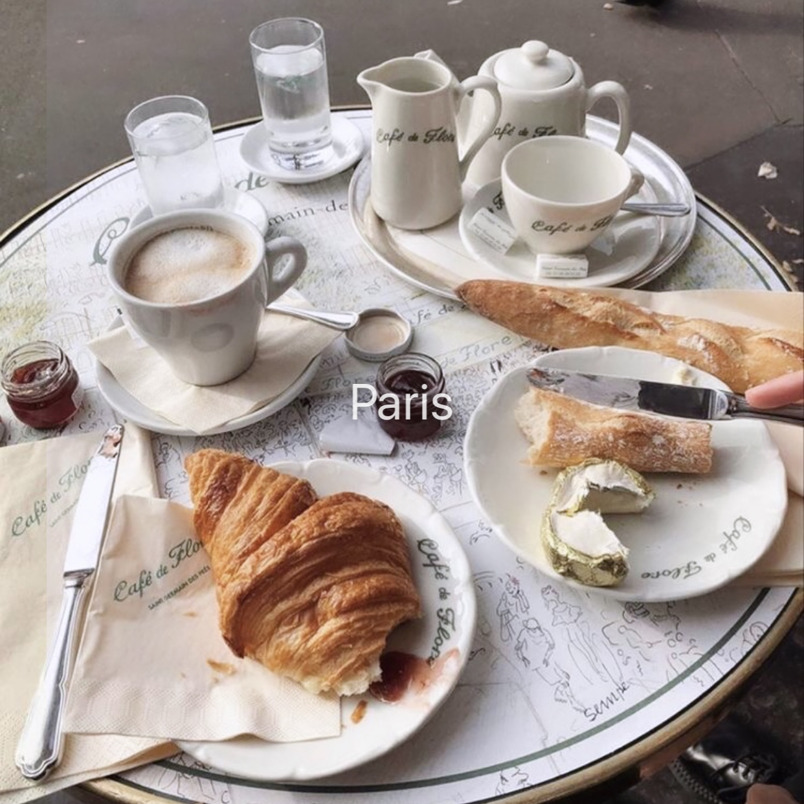

Instagram Effect Gallery Redesign
Improved upon the user experience in terms of functionality and intuitiveness.
UI/UX Design, Personal Project
Personal Project
2 Weeks
What is Instagram Effects?
People often confuse effects with filters. Effects are implemented before a story was taken. It includes almost everything you can think of. Grainy, disposable camera, AR objects, games, etc. Filters are applied after a story was taken. They're all created by Instagram itself. Effects are mostly created by other users with a software, the rest are created by Instagram itself.
Effects
Filters 
Problems
Being the Instagram lover that I am, I spend a lot of time on the app. While trying to implement effects to my stories, I realized some areas of UX that could be improved to enhance the user experience so I decided to dive in and improve its functionality and intuitiveness.
1.Where is the effect library?
The effect gallery is positioned on the rightmost side. Users have to scroll through around 15 trending effects suggested by Instagram itself to eventually get to the gallery.


2. I don't know how to navigate this
When users open the gallery, they see a lot of effects with no specific category indicating what type of effects they're scrolling.
Users can only view a maximum of 4 filters at once, a lot of action (moving thumb) is required for them to view effects.

User Research + Findings
After receiving responses from my survey and conducting in-person observations on 10 participants for my user research, I organized the data and concluded some key findings and pain points.
- 4/10 participants don’t know where the gallery is located.
- Participants who know where the gallery is don’t browse it because it’s time consuming and hard to navigate.
- Many participants don’t understand what the different categories mean.
Business Goals vs User Goals
The reason that Instagram chose to locate where the gallery is located is because they want the primary way of users discovering effects to be from their friends and followings. This actually contradicts with what the user actually wants. From my research I deduced that even though users do find effects from their friends' stories, they actually want to find effects from the gallery on their own.
Design Goals
How might we improve the effect gallery's function and process?
This includes reducing the effort needed from users to access the gallery and make the browsing of effects more user-friendly.
Redesign
Problem 1: Low discoverability of effects gallery
Where the effect gallery is currently located has low discoverability. It's hard to get to and some users don't even know a library exists.

Design A only displays 4 buttons and "looks like" it takes up more screen space.Design B wouldn't work because it clashes with the "cross" that comes up when users are scrolling through different effects. Also, when an effect has multiple versions, they come up there.
Solution


I decided that Design C is the best solution. It relocates the effect gallery next to home and it doesn't make unnecessary changes, so the users won't be confused and solves the problem of easy access and higher discoverability.
Problem 2: Poor system and user intuitiveness for browsing effects
The current gallery displays 4 effects in one screenview and users have to go into the effect to save the effect.

Solution

I chose design B over design A because it has 2 columns instead of 3. It displays the thumbnails with a shorter height, but still enough for the users to view each effects properly. This reduces the amount of actions needed by the users.
The use of 3 columns in design A are too clusted for the screen. Although displays more effects in one viewing, makes it harder to properly view each effect's thumbnail.
A save button is added to the bottom right on each thumbnail for users to save them faster.
I also renamed categories because the current names are quite unclear and vague. Users are often confused as to what each category name means.

Hi-Fidelity Mockups
Relocation of effect library
- Increases discoverability and user intuitiveness.
- Decreases time needed to find where the library is and actually browse it.


Redesign of effect library
- Reduced the height of each thumbnail and added the save button on main page to decrease the amount of action needed by users to still accomplish their goal.
- Renamed categories tab to help users understand what they will get when they select different categories.
Takeaways
1. Keep the users informed
I've seen many cases where users stop using an app or function because they have no idea how to use it or even where to find it! Even the small things like letting the users know what they will get when they click on something. Keeping users in the loop of what's available to them can greatly enhance the user experience of an app and allow them to discover more value in it.
2. Take into account wording problems
As a designer, it's common that we use words according to what we know about the app, but the users may not understand what the words mean. It's important to think about the target user segment, what they know and how they would think about certain wordings